정보통신산업기사 (2021-03-13 기출문제)
1과목: 디지털전자회로
1. 전원회로에서 부하에 최대전력을 공급하기 위해서는 어떻게 하여야 하는가?
- 전원내부저항과 부하저항이 같아야 한다.
- 전원내부저항보다 부하저항이 커야 한다.
- 전원내부저항보다 부하저항이 작아야 한다.
- 전원내부저항보다 부하저항이 크거나 작아야 한다.
(정답률: 58%)

2. 다음 정류회로에서 직류출력 전압(Vdc)과 직류출력 전류(ldc)는 얼마인가? (단, vi=141sin377t[V], R=500[Ω], n1:n2=10:1, 다이오드 전압 강하는 없다)
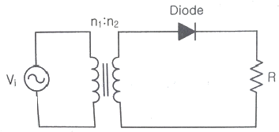
- Vdc=4.5[V], ldc=0.9[mA]
- Vdc=45[V], ldc=9[mA]
- Vdc=4.5[V], ldc=9[mA]
- Vdc=45[V], ldc=0.9[mA]
(정답률: 55%)
3. 다음 중 평활회로의 필터에 대한 설명으로 틀린 것은?
- 반파, 전파 정류회로를 통해 출력되는 맥동류의 교번적인 영향을 줄여 거의 일정한 레벨의 직류를 생성한다.
- 정류회로의 출력 성분 중 리플을 제거하기 위해 정류회로 다음 단에 접속한다.
- 커패시터와 인덕터의 조합으로 구성한다.
- 출력직류전압들을 합하여 입력교류전압보다 최소 2배 이상의 정류효과를 생성한다.
(정답률: 53%)
4. 증폭도가 A인 증폭기에 궤환율 β로 정궤환 되었을 경우 발진이 이루어지는 조건은?
- Aβ=1
- Aβ=0
- Aβ＞1
- Aβ＜1
(정답률: 66%)
5. 다음 중 궤환 증폭기의 특성에 관한 설명으로 틀린 것은?
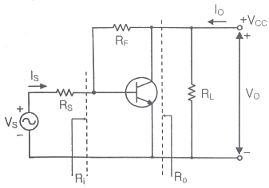
- 궤환으로 입력 임피던스 Ri는 감소한다.
- 궤환으로 출력 임피던스 Ro는 감소한다.
- 궤환으로 전류이득 Io/Is는 감소한다.
- RF가 작을수록 출력전압 VO는 커진다.
(정답률: 59%)
6. 다음 발진기에서 자가 발진을 위한 전압이득 AV의 조건은?
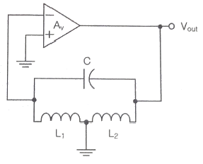
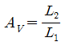
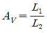
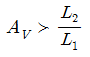
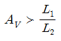
(정답률: 62%)
7. 다음 회로에서 삼각파 입력에 대한 출력의 파형으로 맞는 것은?
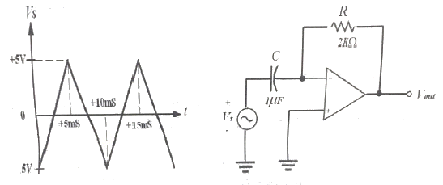
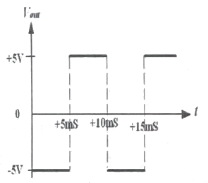
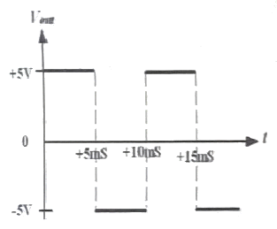
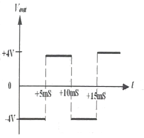
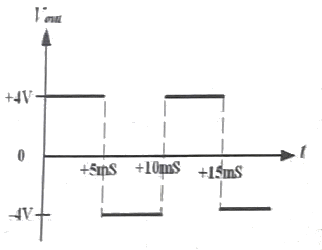
(정답률: 59%)
8. 다음 중 다단 증폭기 출력단에 연결하여 증폭기의 전체 출력저항을 낮추는데 사용하는 회로는?
- 공통드레인 증폭기
- 공통소스 증폭기
- 공통게이트 증폭기
- 공통이미터 증폭기
(정답률: 53%)
9. 다음의 위상 이동 발진기 회로에서 발진이 지속적으로 유지하기 위한 Rf값과 발진기의 출력주파수(Vout)는 약 얼마인가?
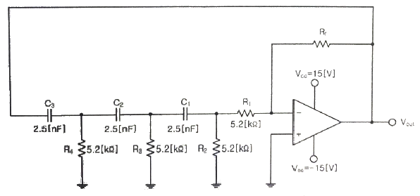
- 15.6[kΩ], 1[kHz]
- 31.2[kΩ], 3[kHz]
- 114.4[kΩ], 4[kHz]
- 150.8[kΩ], 5[kHz]
(정답률: 43%)
10. 다음 중 저주파에서 고주파에 이르기까지 일정한 스펙트럼을 갖고 나타나는 잡음으로 알맞은 것은?
- 트랜지스터 잡음
- 자연 잡음
- 백색 잡음
- 지터 잡음
(정답률: 79%)
11. 다음 중 AM변조방식에서 변조도에 대한 설명으로 틀린 것은?
- 신호파의 최대값을 반송파의 최대값으로 나눈 값이다.
- 반송파의 크기와 신호파의 크기에 따라 정해진다.
- 최대주파수편이와 신호주파수와의 비이다.
- 진폭변화의 정도를 나타낸다.
(정답률: 60%)
12. 900[kHz]의 반송파를 5[kHz]의 신호주파수로 진폭 변조한 경우 피변조파에 나타나는 주파수 성분이 아닌 것은?
- 895[kHz]
- 900[kHz]
- 9⑤[kHz]
- 910[kHz]
(정답률: 74%)
13. 다음 중 변조의 목적이 아닌 것은?
- 안테나의 길이를 줄일 수 있다.
- 잡음 및 간섭의 영향을 적게 받는다.
- 주파수 분할의 다중통신을 할 수 있다.
- 송신 전력을 일정하게 유지할 수 있다.
(정답률: 60%)
14. 다음 중 PCM에서 미약한 신호는 진폭을 크게하고 진폭이 큰 신호는 진폭을 줄이는 기능을 무엇이라 하는가?
- 프리엠퍼시스(Pre-emphasis)
- 압신(Companding)
- 디엠퍼시스(De-emphasis)
- FM 복조시의 리미팅(Limiting)
(정답률: 70%)
15. 다음 회로에서 입력되는 정현파의 최대 진폭이 6[V]일 때 출력에 나타나는 최대 진폭은? (단, RS=200[Ω], RL=400[Ω]이다.)
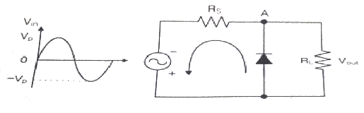
- 2[V]
- 4[V]
- 6[V]
- 8[V]
(정답률: 58%)
16. R-L 직렬 회로에서 시정수(Time Constant) τ는 어떻게 정의되는가?
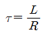
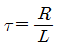
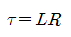
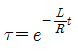
(정답률: 63%)
17. 다음 중 십진수 45를 그레이코드로 바꾼 것은?
- 111011
- 011011
- 110111
- 110011
(정답률: 55%)
18. 다음 진리표의 카르노 맵(Karnaugh Map)을 작성한 것 중 가장 옳은 것은?
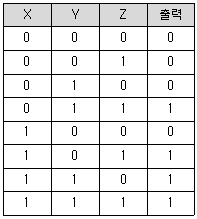
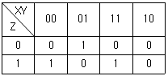
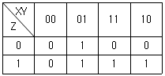
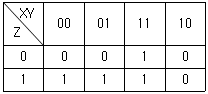
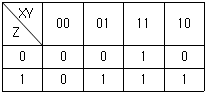
(정답률: 65%)
19. J-K 플립플롭 2개로 동기식 4진 카운터를 설계할 때, 각 플립플롭의 JK입력 조건을 바르게 나타낸 것은?
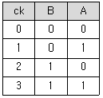
- JA=KA=1, JB=KB=QA
- JA=KA=1, JB=QA, KB=
 A
A - JA=KA=QB, JB=KB=QA
- JA=QB, KA=
 A, JB=QA, KB=
A, JB=QA, KB=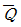
A
(정답률: 52%)
20. 수신측에 다음과 같은 해밍코드가 수신되었다. 몇 번쨰 비트에서 에러가 발생되었는가? (단, P는 패리티 비트, D는 데이터 비트이다.)
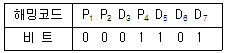
- 3번째
- 5번째
- 6번째
- 7번째
(정답률: 58%)
2과목: 정보통신기기
21. 데이터 단말기의 입·출력 기능으로 틀린 것은?
- 전송제어절차에 따라 정확하게 데이터를 송·수신하기 위한 기능
- 입력 데이터를 컴퓨터가 처리할 수 있는 형태로 변환하는 기능
- 컴퓨터가 처리한 데이터를 인간이나 사물이 인식할 수 있는 형태로 변환하는 기능
- 문자, 숫자, 도형 등을 컴퓨터로 처리 가능한 직류 2진 신호로 변환하는 기능
(정답률: 49%)
22. 다음 중 단말기기의 기능이 아닌 것은?
- 신호변화 기능
- 전송제어 기능
- 입력 기능
- 출력 기능
(정답률: 65%)
23. 다음 중 단말기기의 전송제어 기능이 아닌 것은?
- 회선접속 제어 기능
- 입출력제어 기능
- 신호변환 제어 기능
- 회선제어 기능
(정답률: 52%)
24. 디지털 케이블방송의 모뎀에서 64QAM으로 변조하였다. 64-ary(또는 심볼)는 몇 비트로 구성되는가?
- 2
- 6
- 32
- 64
(정답률: 68%)
25. 다음 중 회선교환방식에 대한 설명으로 가장 적합한 것은?
- 통신정보를 패킷 단위로 교환한다.
- 속도와 코드 변환이 있다.
- 가상회선방식이 존재한다.
- 회선을 점유하고 통신한다.
(정답률: 68%)
26. 다음 중 전화망의 교환시설에 속하지 않는 것은?
- 시내교환기
- 시외교환기
- 중계교환기
- 가입자선로
(정답률: 80%)
27. 네트워크에서 보안을 위한 가장 일차적인 솔루션으로 신뢰하지 않은 외부 네트워크와 신뢰하는 내부 네트워크 사이를 지나는 패킷을 미리 정한 규칙에 따라 차단 또는 허용하는 것을 무엇이라 하는가?
- 방화벽
- VPN
- 침입탐지 시스템(IDS)
- DRM
(정답률: 81%)
28. 집중화기의 하드웨어 구성요소가 아닌 것은?
- 단일 회선 제어기
- 중앙처리장치
- 멀티 회선 제어기
- 역 다중화기
(정답률: 63%)
29. 프로토콜 구조가 전혀 다른 네트워크 사이를 결합하는 장비를 무엇이라 하는가?
- Bridge
- Router
- Repeater
- Gateway
(정답률: 59%)
30. 다음 중 영상회의 시스템의 기본구성요소가 아닌 것은?
- 음향부
- 팩스부
- 영상부
- 제어부
(정답률: 80%)
31. 음성신호를 디지털화하고 압축한 후에 IP 패킷화하여 전달하는 기술은?
- OSPF
- VoIP
- IGMP
- ICMP
(정답률: 80%)
32. 다음 중 IP CCTV 시스템을 구성하는 장비로 가장 거리가 먼 장치는?
- VTR
- PoE 지원형 Switch
- UTP Cable
- 광 전송장치
(정답률: 62%)
33. 통신망 신호방식 중 다이얼 방식에서 메이크시간=2, 브레이크시간=4일 때, 단속비는 얼마인가?
- 0.5
- 1
- 2
- 3
(정답률: 75%)
34. 송신기에서 주파수 체배기를 사용하는 목적이 아닌 것은?
- FM 또는 PM 송신기로 원하는 주파수 편이가 얻어지지 않을 때
- 많은 고조파를 만들어 하모닉 특성으로 선형성을 좋게하기 위하여
- 발진주파수가 원하는 반송 주파수보다 낮을 때
- 발진기 하나로 몇 개의 반송주파수를 사용하기 위하여
(정답률: 49%)
35. 이동통신용 단말기의 사용 파장이 0.1[m]라면 주파수는 얼마인가?
- 3[MHz]
- 3[GHz]
- 30[GHz]
- 300[GHz]
(정답률: 76%)
36. 휴대폰의 무선 인터넷에서 WINC(Wireless Internet Numbers for Contents)를 사용하는 주된 이유는 무엇인가?
- 요금 절감
- URL 입력 용이
- 인증 절차 간편
- 보안 보장
(정답률: 65%)
37. 일반적으로 동영상을 자연스럽게 보이기 위해 1초당 몇 개 이상의 프레임을 보여 주어야 하는가?
- 1
- 5
- 15
- 30
(정답률: 75%)
38. VOD(Video On Demand) 시스템의 구성 중 실제 사용자 단까지 ALL IP 구간으로 전달하는 부분은?
- Pumping부
- 전송부
- 사용자부(Client)
- 데이터 변환부
(정답률: 60%)
39. 다음 중 멀티미디어의 특징이 아닌 것은?
- 두 가지 이상의 매체를 동시에 사용한다.
- 사용자는 시스템과 상호작용이 가능할 수 있다.
- 다양한 형태의 데이터를 디지털 형식으로 통합 처리할 수 있다.
- 두 가지 이상의 시스템으로 매체가 통제되어야 한다.
(정답률: 75%)
40. 멀티미디어용 디스크 어레이(Disk array) 구현 방법 중 별도의 패리티 디스크를 사용하는 방식은?
- RAID-0
- RAID-1
- RAID-3
- RAID-5
(정답률: 67%)
3과목: 정보전송개론
41. 디지털 신호를 아날로그 신호로 바꾸어 전송하는 방식이 아닌 것은?
- ASK
- FSK
- PCM
- QAM
(정답률: 71%)
42. 1. SONET 프레임 구조의 설명으로 옳은 것은?
- 장거리 전화망의 광케이블 구간에 적용되고 있는 물리계층 표준이다.
- 단거리 전화망의 광케이블 구간에 적용되고 있는 물리계층 표준이다.
- 장거리 전화망의 광케이블 구간에 적용되고 있는 데이터링크계층 표준이다.
- 단거리 전화망의 광케이블 구간에 적용되고 있는 데이터링크계층 표준이다.
(정답률: 54%)
43. 다음 중 OFDM 방식에 대한 설명으로 거리가 먼 것은?
- 하나의 정보를 여러 개의 반송파(subcarrier)로 분할하여 병렬 전송한다.
- 최대전력 대 평균전력 비(Peak-to-Avarage Power Ratio)의 특성이 좋아 다수의 부반송파 사용이 가능하다.
- 다중경로 페이딩에 강해 주파수 이용효율이 좋다.
- 분할된 반송파 간의 성분 분리를 위한 직교성 부여로 전송효율이 향상된다.
(정답률: 58%)
44. 다음 중 SONET/SDH에 대한 설명으로 틀린 것은?
- SONET는 STS, SDH는 STM의 계위를 따른다.
- 비동기식 다중화 전송방식의 국제표준이다.
- 계층화 개념을 도입시킴에 따른 유지보수가 용이하다.
- STM-1는 STS-3C와 동등한 전송속도를 가진다.
(정답률: 56%)
45. 다음 중 광통신시스템에서 손실의 종류에 해당되지 않는 것은?
- 커넥터 손실
- 접속 손실
- 전반사 손실
- 광섬유 손실
(정답률: 64%)
46. 광섬유 기반의 광통신 시스템에서 전송 거리를 제한하는 가장 중요한 원인은 어느 것인가?
- 광 손실
- 광 분산
- 광 전반사
- 광 굴절
(정답률: 72%)
47. 정재파 전압의 최소값이 20[V], 최대값이 40[V]인 선로에서 반사계수는?
- 1/2
- 1/3
- 1/4
- 1/5
(정답률: 55%)
48. UTP케이블을 이용하여 네트워크 구성 시 1[Gbps] 속도를 지원하는 케이블 등급은?
- Category 1
- Category 3
- Category 5
- Category 6
(정답률: 61%)
49. 다음 중 혼합형 동기식 전송 방식(lsochronous Transmission)의 특징이 아닌 것은?
- 일반적으로 비동기식 전송보다 전송속도가 빠르다.
- 동기식 전송과 비동기 전송의 특성을 혼합한 방식이다.
- 문자와 문자 사이에 휴지시간이 없다.
- Start bit와 Stop bit를 가진다.
(정답률: 74%)
50. 다음 중 국간 중계선 신호방식의 설명으로 틀린 것은?
- 교환기 간의 신호방식이다.
- 통화로 신호방식이다.
- 공통선 신호방식이다.
- 전화기와 지역교환기 사이의 구간이다.
(정답률: 56%)
51. 4진 PSK의 반송파 간의 위상차는 몇 도인가?
- 45도
- 90도
- 180도
- 270도
(정답률: 64%)
52. Baseband 전송방식의 설명으로 옳은 것은?
- 변조 기법을 통하여 신호의 주파수 대역을 옮겨서 전송한다.
- 무선통신에서 주로 사용한다.
- 변조 방식에는 AM, FM, PM 방식 등이 있다.
- 신호가 원래 가지고 있는 주파수의 범위이다.
(정답률: 55%)
53. 다음 중 비트방식의 데이터링크 프로토콜이 아닌 것은?
- SDLC
- HDLC
- BSC
- LAP-B
(정답률: 68%)
54. OSI 모델의 7계층 중 암호화 및 데이터 압축 등을 수행하는 계층은?
- 응용 계층
- 표현 계층
- 전송 계층
- 세션 계층
(정답률: 67%)
55. 다음 응용 프로그램(응용계층 서비스)중 전송계층(Transport Layer) 프로토콜로 TCP를 사용하지 않는 것은?
- TFTP
- SMTP
- HTTP
- Telnet
(정답률: 63%)
56. 네트워크상에서 발생한 트래픽을 제어하며, 네트워크상의 경로설정 정보를 가지고 최적의 경로설정을 하는 장치는 무엇인가?
- 브리지(Bridge)
- 라우터(Router)
- 리피터(Repeater)
- 허브(Hub)
(정답률: 79%)
57. IPv4에서 주소 부족을 해결하기 위한 방법으로 틀린 것은?
- CIDR
- DHCP
- Subnetting
- NAT
(정답률: 56%)
58. IPv4 주소 A클래스에 대한 표준 네트워크 서브넷 마스크로 옳은 것은?
- 255.0.0.0
- 255.255.0.0
- 255.255.255.0
- 255.255.255.255
(정답률: 74%)
59. 입력되는 정보 마지막에 1[bit]를 추가하여 추가된 Bit로 에러를 검사하는 방법을 무엇이라고 하는가?
- ASCII
- Parity Check
- CRC
- ARQ
(정답률: 81%)
60. 다음 중 변복조기(MODEM)의 송신부의 동작순서로 맞는 것은?
- 단말장치-부호화기-변조기-대역제한필터-증폭기-변환기
- 단말장치-증폭기-변조기-부호화기-대역제한필터-변환기
- 단말장치-부호화기-변조기-변환기-대역제한필터-증폭기
- 단말장치-대역제한필터-부호화기-증폭기-변환기-변조기
(정답률: 61%)
4과목: 전자계산기일반 및 정보설비기준
61. 다음 중 주소 지정 방식에 대한 설명으로 틀린 것은?
- 직접 주소 지정 방식보다 간접 주소 지정의 주소 범위가 더 넓다.
- 간접 주소 지정 방식은 두 번 이상 메모리에 접속해야 실제 데이터를 가져온다.
- 레지스터 간접 주소 지정 방식에서 레지스터 안에 있는 값은 실제 데이터가 있는곳의 주소를 나타낸다.
- 즉시(또는 즉치) 주소 지정 방식에서 오퍼랜드는 기억장치의 주소 값이다.
(정답률: 52%)
62. 다음 중 4-단계 명령어 파이프라이닝의 올바른 실행 순서는?
- 명령어 인출(IF)-명령어 해독(ID)-오퍼랜드 인출(OF)-실행(EX)
- 오퍼랜드 인출(OF)-실행(EX)-명령어 인출(IF)-명령어 해독(ID)
- 명령어 인출(IF)-실행(EX)-오퍼랜드 인출(OF)-명령어 해독(ID)
- 오퍼랜드 인출(OF)-명령어 해독(ID)-명령어 인출(IF)-실행(EX)
(정답률: 65%)
63. 다음 중 2n개의 입력과 n개의 출력으로 구성되는 것은?
- 인코더
- 디코더
- 멀티플렉서
- 디멀티플렉서
(정답률: 58%)
64. 다음 보기와 같은 기능을 수행하는 것은?
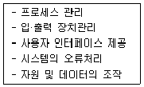
- 하드웨어
- 운영체제
- 응용프로그램
- 미들웨어
(정답률: 79%)
65. 다음 중 “원하는 시간 내에 시스템을 얼마나 빨리 사용할 수 있는 가”의 정도를 나타내는 것은 무엇인가?
- 처리능력(Throughput)의 향상
- 응답시간(Turn-Around Time)의 단축
- 사용 가능도(Availability)의 향상
- 신뢰도(Reliability)의 향상
(정답률: 54%)
66. 논리식
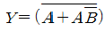
를 간략화하면?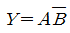
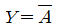
- Y=1
- Y=AB
(정답률: 69%)
67. 다음 중 시스템 소프트웨어에 해당하는 것은?
- 문서작성용 소프트웨어
- 그래픽 편집기
- 윈도우즈(OS)
- 웹 어플리케이션
(정답률: 76%)
68. 현재 메모리의 분할 상태가 다음과 같을 때 크기가 100K인 작업을 최악적합(Worst Fit)기법에 의해 할당한다면 어느 위치에 적재되는가?
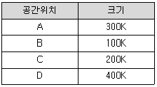
- A
- B
- C
- D
(정답률: 60%)
69. 다음 중 순차 액세스(Sequential Access)만 가능한 보조 기억장치는?
- CD-ROM
- 자기 디스크
- 자기 드럼
- 자기 테이프
(정답률: 54%)
70. 다음 중 비교적 속도가 빠른 I/O 장치를 통해 특정한 하나의 장치를 독점하여 입·출력으로 사용하는 채널은?
- Simple Channel
- Select Channel
- Byte Multiplexer Channel
- Block Multiplexer Channel
(정답률: 63%)
71. 다음 중 방송통신발전기본법에서 규정한 방송통신표준화 대상이 아닌 것은?
- 방송통신기술에 관한 사항
- 방송통신인력에 관한 사항
- 방송통신망에 관한 사항
- 방송통신서비스에 관한 사항
(정답률: 71%)
72. 다음 중 통신기계실에 설치되는 설비로 알맞은 것은?
- 전송설비
- 안테나설비
- 차폐설비
- 교정설비
(정답률: 62%)
73. 공동주택단지 내 영상정보처리기기로 촬영된 자료는 몇일 이상 보관 해야 하는가?
- 15일
- 30일
- 60일
- 90일
(정답률: 66%)
74. 다음 중 과학기술정보통신부장관이 국립전파연구원장에게 위임한 사항이 아닌 것은?
- 방송통신기자재의 적합인증, 적합등록 및 적합성평가 등에 관한 사항
- 지정시험기관에 대한 시정명령 및 지정취소에 관한 사항
- 자가전기통신설비의 설치 신고의 수리에 관한 사항
- 전자파강도 및 전자파흡수율 측정기준의 고시에 관한 사항
(정답률: 56%)
75. 공사업자가 설계도서 및 관련 규정에 따라 공사를 적합하지 않게 시공하는 경우 감리원이 어떠한 조치를 내릴 수 있는가?
- 공사 발주자에게 공사 도급을 파기하도록 할 수 있다.
- 공사 발주자에게 공사업자로 하여금 설계변경 요구를 하도록 할 수 있다.
- 공사 발주자의 동의를 얻어 공사중지명령을 할 수 있다.
- 공사 발주자의 동의를 얻어 공사업자를 교체할 수 있다.
(정답률: 67%)
76. 다음 중 기간통신사업자가 전기통신설비의 설치 및 보전을 위하여 사유 및 국·공유의 토지 등을 일시 사용하면서 타인에게 손실을 끼친 경우의 조치사항으로 가장 바람직한 것은?
- 과학기술정보통신부장관의 벌칙규정에 따라 과징금을 내어야 한다.
- 손실을 입은 사람에게 정당한 보상을 해주어야 한다.
- 피해자에게 납부한 과징금으로 보상하여야 한다.
- 피해자에게 보험으로 변상을 해주어야 한다.
(정답률: 70%)
77. 정보통신기술자의 현장배치기준에 대해 설명한 것으로 괄호한에 들어 갈 내용으로 알맞은 것은?
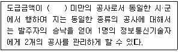
- 5천만원
- 1억원
- 3억원
- 5억원
(정답률: 77%)
78. 다음 중 과학기술정보통신부장관 또는 방송통신위원회가 정보통신망 이용촉진 및 정보보호 등에 관한 시책을 수립함에 있어 어느 계획과 연계되도록 하여야 하는가?
- 전기통신 종합계획
- 정보통신 종합계획
- 지능정보사회 종합계획
- 초고속정보통신망 종합계획
(정답률: 46%)
79. 다음 중 시·도지사가 반드시 정보통신공사업 등록취소를 하여야 하는 경우는?
- 타인의 등록증이나 등록수첩을 빌려서 사용한 경우
- 정보통신기술자를 공사현장에 배치하지 아니한 경우
- 관계법령을 위반하여 부실하게 공사를 시공한 경우
- 폐업신고를 하지 아니하거나 거짓으로 신고한 경우
(정답률: 59%)
80. 정보통신공사업법에서 사용하는 용어에 대해 설명한 것으로 맞게 나열된 것은?
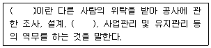
- 용역, 감리
- 용역, 시공
- 하도급, 감리
- 하도급, 시공
(정답률: 66%)